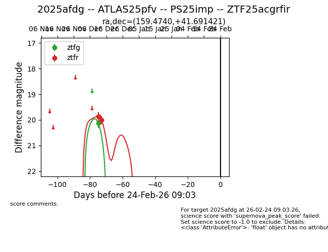
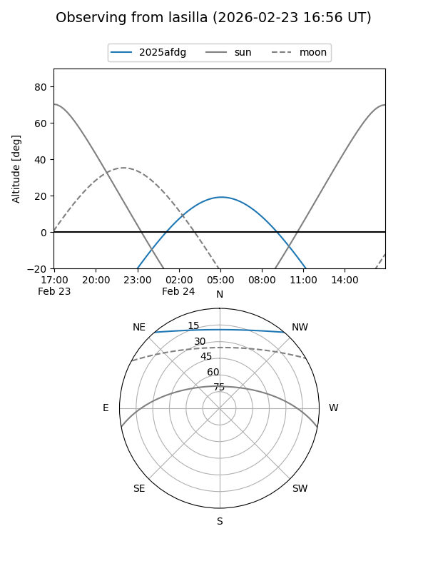
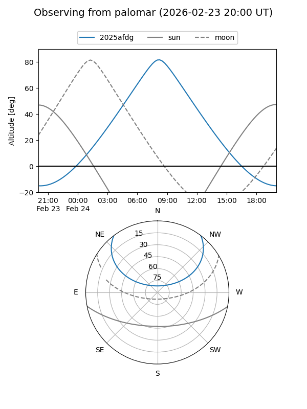
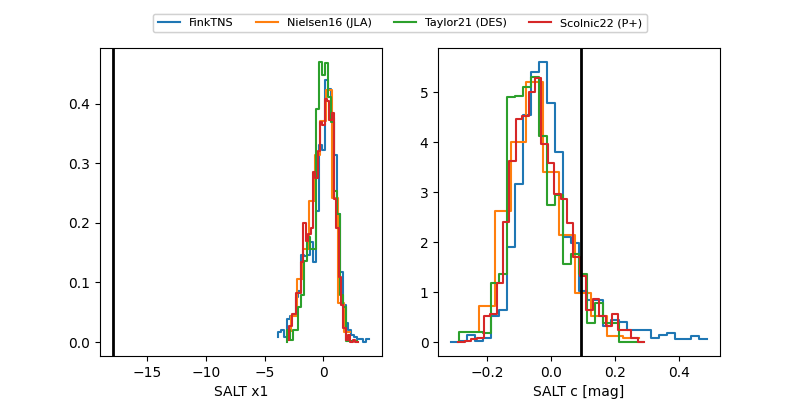

2025afdg
Target 2025afdg at 2025-12-28 20:42
Aliases and brokers:
FINK: fink-portal.org/ZTF25acgrfir
Lasair: lasair-ztf.lsst.ac.uk/objects/ZTF25acgrfir
ALeRCE: alerce.online/object/ZTF25acgrfir
TNS: wis-tns.org/object/2025afdg
YSE: ziggy.ucolick.org/yse/transient_detail/2025afdg
alt names
ZTF25acgrfir (ztf,fink_ztf)
2025afdg (tns,yse)
PS25imp (panstarrs)
ATLAS25pfv (atlas)
Coordinates:
equatorial (ra, dec) = 159.4740,+41.69142
equatorial (HMS+DMS) = 10:37:53.77,+41:41:29.12
galactic (l, b) = (176.1108,+59.11574)
Flags:
Photometry:
last ztfg=20.12, ztfr=20.01
1 ztfg, 2 ztfr detections
Lightcurve

Visibility


Additional plots
